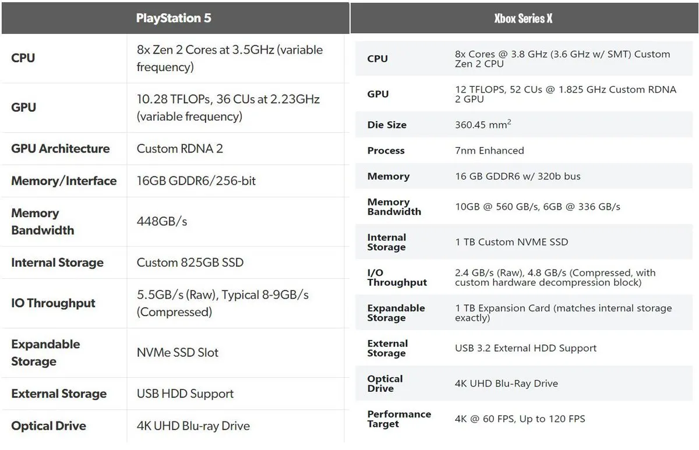
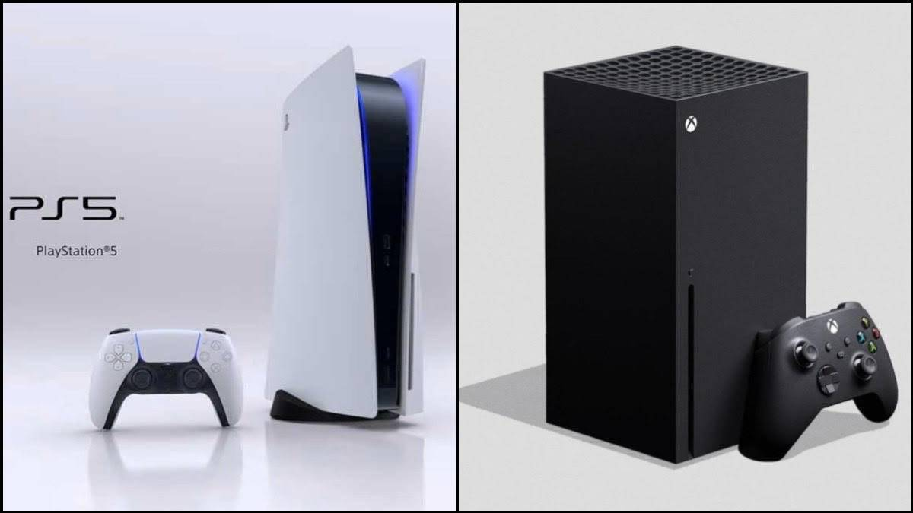

¿Cuál tiene más potencia?
Si comparamos en justicia los dos modelos, la PlayStation 5 tiene un desempeño inferior que la Xbox Series X, tanto en su CPU (un 10%) como en su GPU (un 18%), además de tener menos almacenamiento interno.
La memoria se comparte, en ambas consolas, entre procesador (RAM) y gráfica (VRAM), 16 GB GDDR6 que, en el caso de Xbox Series X, se dividen entre 10GB para GPU y 6GB distribuidos así: 3,5 GB para memoria de flujo estándar y 2,5 GB para el OS.
Respecto a PlayStation, no se ha descrito esta división pero se tiene constancia que los 10 primeros GB son ligeramente más rápidos que los de Xbox Series X, con un ancho de banda teórico de 560GB/s y 336 GB/s en los seis restantes, frente a los 224 GB/s de la consola de Microsoft.
En cuanto a las memorias internas, la de Sony alcanzará 5,5 GB/s, frente a los 2,4 GB/s de Xbox Series X, lo que garantiza una transferencia de datos comprimidos mucho más rápida en PlayStation 5, de hasta 9 GB/s frente a los 4,8 GB/s de la consola de Microsoft.
Por último, una consideración técnica en términos de conectividad: ambas consolas han confirmado puerto RJ-45 (para conexión a la red mediante cable), pero PS5 apuesta por el estándar WiFi 6 y la conectividad Bluetooth 5 mientras que Xbox Series X opta por WiFi 5, puerto S/PDIF para audio de alta calidad y dos puertos USB de tipo C, de carga rápida.

Diferencias en el precio
Vamos ahora con las diferencias de precio entre ambas consolas.
- PlayStation 5 Digital Edition costará 399 € en el territorio español. Aún no se han confirmado kits especiales y la consola siempre se comercializará con un mando DualSense. Los controladores DualShock 4 de PS4 son compatibles con los juegos de PS4 emulados en PS5, pero en ningún caso serán compatibles con PlayStation 5. La edición con lector de discos de costará 499 € y también vendrá acompañada de un mando DualSense.
- Xbox Series X (edición con lector de discos) se comercializará por 499 €.
- Xbox Series S (edición digital) tendrá un precio de 299 €. Aún no se han confirmado bundles y la consola siempre se comercializará con un Xbox Controller totalmente actualizado, con un nuevo D-Pad híbrido heredado del Xbox Elite Serie 2. Los controladores anteriores de Xbox One S/X también son totalmente compatibles con los juegos de Xbox Series S/X.

Fechas de lanzamiento
- Xbox Series X saldrá a la venta el 10 de noviembre en todos los territorios, sin diferencia.
PlayStation 5 llegará de forma ligeramente más escalada: el 12 de noviembre a los mercados australiano, coreano, japonés y estadounidense y el 20 de noviembre al resto (incluido España).
¡¡Echa un vistazo a mi otra página web!!
 Volver al principio
Volver al principio